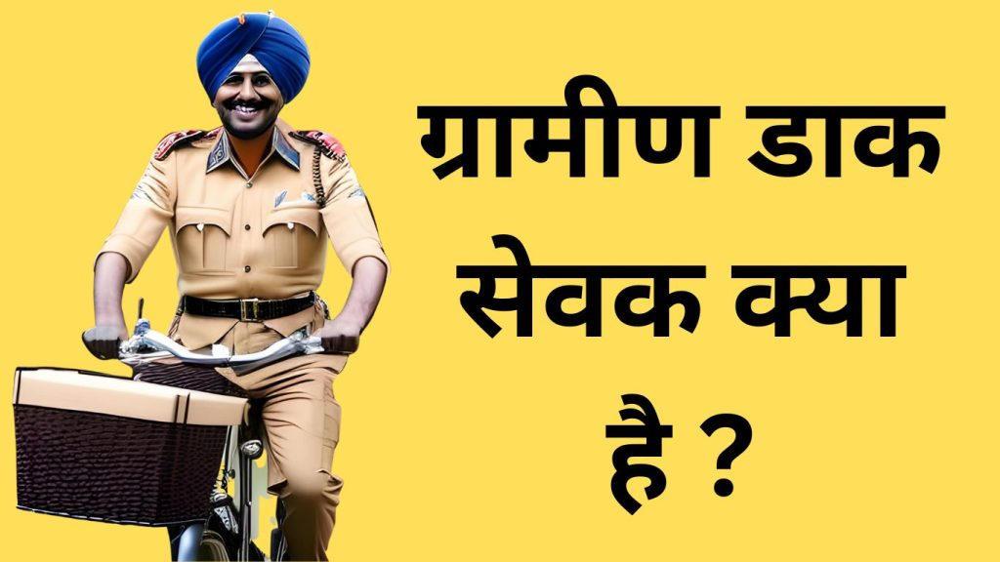

GDS (Gramin Dak Sevak) भारतीय डाक विभाग के महत्वपूर्ण सेवाएँ गाँव गाँव घूमकर देते हैं, जैसे चिठ्ठी पत्री गाँव जाकर बाँटना ,Speed post Delivery करना ,गाँव के लोगो का Post office खाता संचालन करना आदि ।आज के इस लेख में हम जानेंगे की GDS Full Form In Post office In Hindi क्या होता है ,ग्रामीण डाक सेवक क्या होता है ,ग्रामीण डाक सेवक के क्या कार्य हैं ,ग्रामीण डाक सेवक कैसे बनते हैं। कुल मिलाकर कहे तो ग्रामीण डाक सेवक के बारे में संपूर्ण जानकारी आपको यहाँ मिलने वाली है तो आइये जानते हैं :-
GDS Full Form In Post office In Hindi
जीडीएस का पूर्ण रूप है “ग्रामीण डाक सेवक“।GDS full Form “Gramin Dak Sevak” hai । G – Gramin (ग्रामीण )D – Dak (डाक )S – Sevak (सेवक )यह भारतीय डाक घर (India Post Office ) में एक पद है जो ग्रामीण क्षेत्रों में डाक सेवाएं प्रदान करता है।
ग्रामीण डाक सेवक (Gramin Dak Sevak) कौन होते हैं?
भारतीय डाक विभाग के अंतर्गत ग्रामीण क्षेत्रों में डाक सेवा को संभालने के लिए ग्रामीण डाक सेवक (Gramin Dak Sevak) नियुक्त किए जाते हैं। ये सेवक गांवों और ग्रामीण क्षेत्रों में डाकिया/डाकिनी के रूप में कार्यरत होते हैं ।ग्रामीण डाक सेवक भारतीय डाक विभाग के लिए बहुत महत्वपूर्ण होते हैं क्योंकि उन्हें डाक सेवा के लिए सर्वाधिक उपयुक्त जानकारी होती है और वे लोगों तक संदेश पहुंचाने का काम करते हैं।
ग्रामीण डाक सेवक के कार्य
ग्रामीण डाक सेवकों (GDS) निम्नलिखित कार्यों को संभालते हैं:-
- डाक वितरण (Consignment Delivery) :- ग्रामीण डाक सेवक गांव के लोगों को उनके घर तक डाक पहुँचने या ऑनलाइन ख़रीदारी किए हुए सामान को लोगों तक पहुँचने का कार्य करते हैं ।
- पैसे का भुगतान (Payment)ग्रामीण डाक सेवक गांव में रहने वालें लोगो के परिजनों द्वारा दूर किसी शहर से भेजे गये पैसे का भी भुगतान करते हैं । वे पेंशन, बीमा, और अन्य सरकारी योजनाओं के लिए भी पैसे वसूल करते हैं।
- डाक खातों का प्रबंधन करना (Postoffice Account Management) :-ग्रामीण डाक सेवक गांव में रहने वाले लोगो के डाक खाते के प्रबंधन का काम भी करते हैं। वे लोगों के नये डाक खाते खोलने एवं डाक खाते से पैसे लेनदेन करने का काम भी करते हैं ।
- सरकारी योजनाओं की जानकारी (Awareness of Government Scheme) :-ग्रामीण क्षेत्रों में सरकारी योजनाओं की जानकारी डाक सेवक द्वारा पहुंचाई जाती है। वे लोगों को आवश्यक Documents की सूचना देते हैं और उन्हें उचित समय पर योजनाओं के लाभ लेने के लिए सही तरीक़ा बताते हैं ।
- डाक संदेशों की वितरण की जांच (Check delivery of postal messages) :- ग्रामीण डाक सेवकों को डाक संदेशों की वितरण की जांच करने का भी काम होता है। वे सुनिश्चित करते हैं कि लोगों के संदेश उनके हाथ तक सही समय पर पहुंचे।
ग्रामीण डाक सेवक (GDS) Salary Per month कितना होता है?
ग्रामीण डाक सेवकों की सैलरी का स्तर उनके पद के अनुसार भिन्न होता है। सामान्यतः, एक ग्रामीण डाक सेवक की मासिक सैलरी लगभग 10,000 रुपये से शुरू होती है और यह अधिकतम 12,000 से 14,000 रुपये तक हो सकती है। साथ ही, डाक सेवकों को अन्य भत्ते और लाभ भी मिलते हैं जो इनके सैलरी को और बेहतर बनाते हैं।
GDS Salary Increment Per Year
ग्रामीण डाक सेवकों को सालाना वेतन वृद्धि दिया जाता है ।, डाक सेवक के सैलरी की वृद्धि उनके पद के अनुसार दी जाती है। यदि वे अपने काम में परिपूर्ण हैं और अच्छे रिव्यू रेटिंग वाले होते हैं तो उन्हें हर साल भारत सरकार के कर्मचारियों की तरह आगे की पदों में पदोन्नति का मौका मिलता है। इससे उनकी सैलरी में भी वृद्धि होती है।
ग्रामीण डाक सेवक की नियुक्ति कौन करता है?
ग्रामीण डाक सेवकों(GDS) की नियुक्ति भारतीय डाक विभाग द्वारा की जाती है। यह नियुक्ति डाक विभाग द्वारा पूरे भारत के सभी लोकल पोस्ट ऑफिस में रिक्तियों के विरुद्ध एक साथ विज्ञापन आयोजित कर किया जाता है ।तत्पश्चात् विज्ञापन में आवश्यक मापदंड के अनुसार सफल उम्मीदवारों को GDS (ग्रामीण डाक सेवक ) के रूप में डाक घरों में नियुक्त किया जाता है।
{kind=link}

GDS के लिए Elibgility Criteria क्या है ?
Gramin Dak Sevak (GDS) बनने के लिए कुछ आवश्यक योग्यता एवं मापदंड होते है अगर आप इन सभी योगायताओं को परिपूर्ण करते हैं तो आप Gramin Dak Sevak (GDS) के Vacancy के विरुद्ध आवेदन करने के योग्य है ।Gramin Dak Sevak (GDS) के पद पर आवेदन करने के पश्चात सफल होने पर आप Gramin Dak Sevak (GDS) बन सकते हैं ।
तो आइए जानते हैं की Gramin Dak Sevak (GDS) के लिए क्या पात्रताएँ है :-
1. ग्रामीण डाक सेवक के लिए शैक्षणिक योग्यता:
(1.a) सभी स्वीकृत श्रेणियों के ग्रामीण डाक सेवक पद के लिए, सरकार द्वारा मान्यता प्राप्त किसी भी राज्य सरकार/भारत सरकार के द्वारा 10वीं कक्षा में उत्तीर्ण होने का प्रमाणपत्र जिसमें गणित और अंग्रेजी के विषयों में उत्तीर्ण होना (अनिवार्य या वैकल्पिक विषय के रूप में पढ़ाया जाता है) एक अनिवार्य शैक्षणिक योग्यता है ।
(1.b) आवेदक को स्थानीय भाषा का ज्ञान होना चाहिए ,आवेदक को कम से कम माध्यमिक स्तर तक स्थानीय भाषा को पढ़ना अनिवार्य है [अनिवार्य या वैकल्पिक विषय के रूप में]।
2. अन्य योग्यताएं(Other Qualification)
A. कंप्यूटर का ज्ञान:- उम्मीदवार को कंप्यूटर का साधारण ज्ञान होना चाहिए क्योंकि आजकल लगभग सभी डाक घर Online हो गये हैं और उनमें Computer का इस्तेमाल किया जाने लगा है।
B. साइकिलिंग का ज्ञान :- ध्यान दे , चाहे कोई भी आवेदक हो महिला हो या पुरष हो उन्हें साइकिल चलाने का ज्ञान होना अनिवार्य है क्योंकि ग्रामीण डाक सेवक का मूल कार्य गाँव में साइकिल से घूमकर डाक सेवा प्रदान करना है ,बिना साइकिल चलाये डाक सेवाएँ गाँव तक नहीं पहुँच सकती है ।इसीलिए अगर आप ग्रामीण डाक सेवक बनना चाहते है तो आपको साइकिलिंग अनिवार्य रूप से आनी चाहिए ।
3. ग्रामीण डाक सेवक के लिए उम्र सीमा:
ग्रामीण डाक सेवक बनाने के लिए न्यूनतम आयु: 18 वर्ष एवं अधिकतम आयु: 40 वर्ष होनी चाहिए तभी आप ग्रामीण डाक सेवक के लिए योग्य माने जाएँगे।अधिकतम आयु सीमा में छूट आरक्षण कोटि के अनुसार भी दिया जाता है :
- अनुसूचित जाति/अनुसूचित जनजाति (SC/ST):- 5 वर्ष
- अन्य पिछड़ा वर्ग (OBC):- 3 वर्ष
- आर्थिक रूप से कमजोर वर्ग (EWS):- कोई छूट नहीं
- विकलांग व्यक्ति (PwD) :- 10 वर्ष
- विकलांग व्यक्ति (PwD) + OBC:- 13 वर्ष
- विकलांग व्यक्ति (PwD) + SC/ST :- 15 वर्ष
4. रहने का स्थान
उम्मीदवार को ग्रामीण क्षेत्र में रहना आवश्यक है।
Gramin Dak Sevak (GDS) kaise Bane (ग्रामीण डाक सेवक कैसे बनें) ?
ग्रामीण डाक सेवक (GDS) बनने के लिए आपको नीचे दिये गाये स्टेप्स को फॉलो करना होगा तभी आप ग्रामीण डाक सेवक (GDS) बन पायेंगे ।
1.पात्रता (Eligible Criteria)
आपके पास सबसे पहले ग्रामीण डाक सेवक (GDS) के लिए उचित पात्रता होना आवशक है उसके बाद ही आगे कुछ कर सकते हैं ।
2.रोजगार समाचार पढ़े
ग्रामीण डाक सेवक (GDS) की बहाली के बारे में न्यूज़ प्राप्त करने के लिए निरंतर रोज़गार समाचार या Online Job Portal पर जाकर Job Update प्राप्त करते रहे आपको ग्रामीण डाक सेवक (GDS) के बहाली के बारे में भी जानकारी यही से मिलेगी ।
3. ग्रामीण डाक सेवक (GDS) के लिए आवेदन करें
ग्रामीण डाक सेवक (GDS) की बहाली निकालने पर आप ग्रामीण डाक सेवक (GDS) के पद पर नियुक्ति हेतु आवेदन करे ।
4. बोर्ड की परीक्षा में अच्छे नंबर लायें
ग्रामीण डाक सेवक के के पद पर ज़्यादातर प्रतियोगिता परीक्षा का आयोजन नहीं किया जाता है ,इसके लिए दसवी के बोर्ड परीक्षा में प्राप्त अंक /ग्रेड के आधार पर मेरिट लिस्ट तैयार करके चयन किया जाता है इसीलिए आपको बोर्ड के परीक्षा में अच्छे नंबर लेन हैं ।
ग्रामीण डाक सेवक के लिए चयन की प्रक्रिया क्या है?
आइये अब ग्रामीण डाक सेवक के पद पर चयन के विभिन्न मानदंड के अलग-अलग पहलुओं पर विचार करते हैं और जानते हैं की ग्रामीण डाक सेवक के पद पर चयन की प्रक्रिया क्या है –
1. मेधा सूची के आधार पर चयन (Selection Based on Merit List)
- आवेदकों का चयन एक Computer System Generated Merit List के आधार पर किया जाता है ।
- इस मेरिट सूची को Marks( अंक) के आधार पर तैयार किया जाता है , जो अलग-अलग बोर्डों ने 10 वीं कक्षा के अंतर्गत प्राप्त किए गए होंगे।।
2. ग्रेड को मार्क्स में बदल कर मेधा सूची तैयारी (Preparing Merit List Using Grade and Marks Conversion)
- वे आवेदक जिनके पास 10 वीं कक्षा के अंतर्गत प्राप्त अंक या ग्रेड दोनों होते हैं, उन्हें केवल अंकों के साथ ही आवेदन करना होता है ।
- केवल ग्रेडों के साथ आवेदन करने वाले आवेदकों के लिए, प्रत्येक विषय (अनिवार्य और वैकल्पिक विषयों को छोड़कर) के लिए अंक लागू करने के लिए 9.5 के गुणनखंड का उपयोग किया जाएगा:
- A1 ग्रेड – 10 अंक – 9.5 गुणनखंड
- A2 ग्रेड – 9 अंक – 9.5 गुणनखंड
- B1 ग्रेड – 8 अंक – 9.5 गुणनखंड
- B2 ग्रेड – 7 अंक – 9.5 गुणनखंड
- C1 ग्रेड – 6 अंक – 9.5 गुणनखंड
- C2 ग्रेड – 5 अंक – 9.5 गुणनखंड
- D ग्रेड – 4 अंक – 9.5 गुणनखंड
3. समान मेधा अंक वाले आवेदक का चयन
जो आवेदक समान अंकों के साथ उम्र में बड़े होंगे, उनको प्राथमिकता दी जाती है इसके अलावा निम्नलिखित प्राथमिकता क्रम के आधार पर भी चयन किया जाता है :
- ST ट्रांस-महिला
- ST महिला
- SC ट्रांस-महिला
- SC महिला
- OBC ट्रांस-महिला
- OBC महिला
- EWS ट्रांस-महिला
- EWS महिला
- UR ट्रांस-महिला
- UR महिला
- ST ट्रांस-पुरुष
- ST पुरुष
- SC ट्रांस-पुरुष
- SC पुरुष
- OBC ट्रांस-पुरुष
- OBC पुरुष
- EWS ट्रांस-पुरुष
- EWS पुरुष
- UR ट्रांस-पुरुष
- UR पुरुष
ग्रामीण डाक सेवक आवेदन फॉर्म कैसे भरें?
जैसा की आपको ऊपर बताया गया की ग्रामीण डाक सेवक की बहाली समय समय पर भारतीय डाक विभाग द्वारा ग्रामीण इलाको के डाक घरों में रिक्तियों के विरुद्ध निकली जाती है । रिक्तियों Publish होने पर अगर आप ग्रामीण डाक सेवक के लिए योग्य उम्मीदवार होंगे तो आपको निम्नलिखित चरणों का पालन करके ग्रामीण डाक सेवक के पद पर आवेदन करना होगा ।
- Registration :-सबसे पहले आपको Indian post के Official Website पर जाकर https://indiapostgdsonline.gov.in/ रजिस्ट्रेशन करके अपना रजिस्ट्रेशन नंबर पता करना होगा ।
- Fee Payment :- अपने रजिस्ट्रेशन नंबर से लॉगिन करके आपको ग्रामीण डाक सेवक के पद के लिए आपके आरक्षित कोटि के अनुसार जो भी आवेदन शुल्क निर्धारित की जाती है उन्हें भुगतान करना होगा ।
- इसके बाद Document,Photo, Signature आदि अपलोड करके फॉर्म को सबमिट कर देना होता है ।
- Correction of Form – ग्रामीण डाक सेवक का फ़ोमर सबमिट कर देने के बाद भी अगर फॉर्म भरने के क्रम में कोई त्रुटि हो जाती है तो इसके लिए भी डाक बिभाग द्वारा एक निश्चित समय अंतराल दिया जाता है ।इस समय सीमा के अंदर आप फॉर्म भरने में हुए त्रुटियों को सुधार कर फॉर्म को resubmit कर सकते हैं ।
India Post Gds Exam Pattern कैसा होता है ?
Gds (Gramin Dak Sevak) के पद पर नियुक्ति के लिए कोई भी प्रीतियोगिता परीक्षा फ़िलहाल डाक बिभाग द्वारा नहीं लिया जाता है ।जहां तक India Post GDS के Syllabus की बात करें तो आपको अपने दसवी के पाठ्यक्रम को ही अच्छे से पढ़ना है । क्योंकि दशवी बोर्ड में प्राप्त अंक के आधार पर ही फ़िलहाल ग्रामीण डाक सेवक का चयन हो रहा है ।
ग्रामीण डाक सेवक परीक्षा की तैयारी कैसे करें?
इसके लिए आपको अपने राज्य सरकार या भारत सरकार के दसवी बोर्ड के परीक्षा की तैयारी करें और ज़्यादा से ज़्यादा नंबर लाने का प्रयास करें ,क्योंकि दशवी में आपके जीतने ज़्यादा नंबर होंगे आपके चयन होने के चांस उतना ही ज़्यादा होगा ।
GDS का Full Form क्या है?
ग्रामीण डाक सेवक (Gramin Dak Sevak )
ग्रामीण डाक सेवक (GDS) Salary Per month कितना होता है?
रू 10,000/- से रू 14,000/-
ग्रामीण डाक सेवक की नियुक्ति कौन करता है?
भारतीय डाक विभाग
ग्रामीण डाक सेवक के लिए उम्र सीमा क्या है?
18-40 वर्ष
ग्रामीण डाक सेवक के लिए चयन की प्रक्रिया क्या है?
दसवी बोर्ड के प्राप्तांक के आधार पर मेधा सूची तैयार करके।